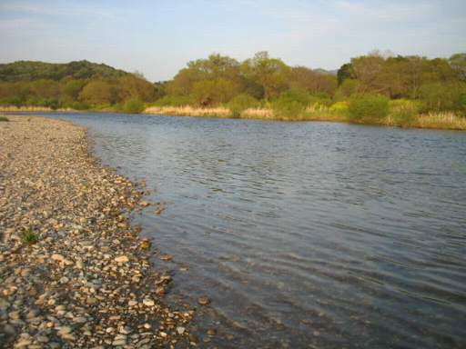
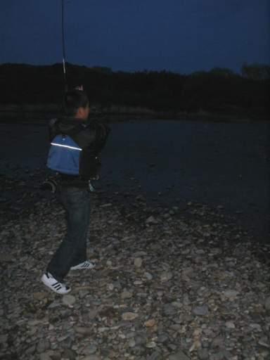
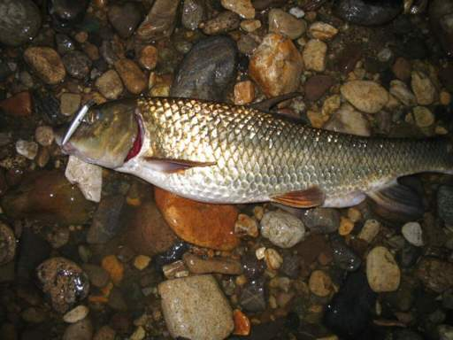

釣行日誌 故郷編
2007/04/15 夕暮れのざわめき
無性に釣りがしたくなった。
数年ぶりで釣具店に入ると、本流のサツキマス情報などというチラシが置いてある。ふーんと手にとって見ると、なかなかに詳細なポイントが書いてあるが、いかんせん情報が古い。2000年の日付であった。だいたいが確率の高い釣りではないので期待はしていないのだが、デジタルカメラの電池を充電し、長年使ったミッチェルの409には新品の６ポンドラインを巻き、大き目のスプーンをホルダーに入れていそいそと支度をし、自宅を出る。
まだ早いこの時期ならば、下流の方が良いかと思い、本流の感潮区間の終わるぎりぎりのポイントに向かう。以前から堤防道路を車で通る度に良さそうなポイントだなぁと目を付けておいた早瀬の流れ込みである。
堤防道路を降りて畑の中の砂利道をガタゴトと揺られて川原を目指すと、大型のワンボックスが少し前を走って行く。
「ありゃりゃ、日曜日だし、先行者かな？」
と思いながら駐車場まで行くと、くだんのワンボックスからは真っ黒なリトリーバーが３尾も出てきて、川原での散歩をするところであった。やれやれと思いつつ、飼い主夫妻に挨拶をして上流へと向かう。瀬の頭まで歩いてゆき、そこから早瀬の流芯と瀬脇とをダウンクロスで攻め下るのが今日の戦法である。対岸の水辺には魅力的な淀みが出来ているが、根がかりが怖いのであまりギリギリに攻めるのはやめておく。８グラムの金色スプーンを結び、えいやっと遠投し、流れに乗せつつ底近くまで送り込み、ユラユラが感じとれるようになってからゆっくりとリーリングを始める。果たしてこんな方法で釣れるのかはまったく自信が無い。（笑）
さすがにここまで下流に来ると、水質もあまり良いとは言えず、底近くを流れるスプーンには、水草や苔がよくからまる。果たしてサツキマスは居るのか？
ふと下流を見ると、おそらくこの近所では最高のポイントと言って良いであろう淵の流れ込みにさっきのリトリーバー３尾が大喜びで突入し、ワンワンわんわん吠えながら水しぶきを上げている。飼い主夫妻が放り込むテニスボールを取りに夢中になって川の中へ飛び込んでいるのである。
「あちゃー！」
それはないぜと思いつつ、なんとか気を取り直してキャストを続ける。久しぶりの釣りで腕がなまったのか、底を釣ってしまいルアーを二つほど無くしてしまった。
早瀬の半ばほどに、ちょっとした石があり、その後ろに魅力的な後流がざわざわと波立っている。居るならこの辺だがなぁと思いつつハスルアーの赤金を巻いてくるとコンッと当たりがあり、ぶるぶるぐねぐねと反応があった。
「きたっ！」
と思って竿を立て、ファイトの体勢に入る。それほど大きくはない。ググググっとこらえていると黒い魚の頭が見えてふいにスッと軽くなった。
「あれぇっ、バレたかっ？」
がっくりと気を落としつつ巻き取ってくるラインの先には、精気を無くしたハスルアーがゆらゆらとぶらさがっているばかり。うーん、今のはそれらしいファイトだったがなぁと思っても後の祭りである。ちょっと合わせが弱かった。しかし何だったんだろう今の魚は？おそらく尺ちょうどくらいの大きさだったから、あるいはウグイ、あるいは本命のサツキマスかもしれない。なんにしても、魚の姿を見る前にばれたのが悔しい。もっとも魚が見えてそれがサツキマスだったらもっと悔しいだろうが。再びキャストを始める。これで良いのかがわからないが、少なくともルアーにアタックしてくる魚が居る事はわかった。
対岸にキャスト、リーリング。流芯にキャスト、リーリング、上流の瀬脇にキャスト、リーリング、そして６歩下ってまたその繰り返し。根気の要る釣りである。しかし久しぶりの釣りは楽しい。春うららかな陽気の下、私の心はゆるやかな放物線を描いて対岸へと向けて投射され、流れの中に沈み、深みの魚影を探す。白銀の魚体は果たして居るのだろうか？

さっきまで犬たち３尾がはしゃぎ回っていた淵の頭まで釣り下がってきた。深みからはなんの応答も無い。
「やはり駄目か。このあたりにはサツキマスは居ないのかなぁ.......」
別のポイントへ車で移動してまた長い瀬を攻めるのには少し時間が足りそうも無いので、このまま今釣ってきたポイントを再び釣り上がってみることにする。瀬脇を中心に、しつこくルアーを流す。
さっき、ばらしたポイントもしつこくしつこく流してみるが、もうさすがに懲りたのか、魚の反応は無い。そうこうしているあいだに瀬の頭まで釣り上がってしまった。ここまで来たら、もう少し足を伸ばしてあと数百メートル上の淵尻を狙ってみることにして、水際を静かに歩き出した。
淵尻に石が点在し、流れが波立っているところまで来ると、急にバシャッと水音がした。
「何か居る！」
歩みを止め、体勢を低くし、静かに水音のしたあたりを凝視する。夕暮れが近くなった水面に、ふと、大きなヒレが現れ、けたたましい水音を立てて、突進した。ヒレの前方あたりには小魚がパニック状態で水面に飛び出している。
「あれはっ！？」
高い背びれ、黄金色の体色。サツキマスではない。（笑） どうやらニゴイの大物が小魚を狙って瀬に出てきているらしい。しきりにあたりを徘徊し、突進を繰り返すたびに水面が盛り上がっている。ルアーをやる者の端くれとして、これを見てやる気の出ないわけがない。仮に相手がニゴイだったとしても。
腰を屈めて数歩近寄り、小型のハスルアーを水面の盛り上がりのやや前方にキャスト、そしてリーリング。反応は無い。ようしそれでは、と思い、ルアーをトビーに交換して再び攻める。しかし反応は無い。今日に限ってプラグを全然持って来なかったのである。
激しい水面のざわめきを目前にして、頭の中をカンカンに熱くしてキャストを繰り返していると、ふいに背後から声がした。
「つれますかぁ？」
驚いて振り向くと、長いルアーロッドに馬鹿でかい赤白のルアーをぶら下げた青年がニコニコの笑顔で立っている。
「しーっ、静かに！」
こちらの顔があまりに真剣だったのか、青年も直ぐに真顔になり、体を屈めて近づいてきた。
「何か居ますか？」
「居る居る。でかいのが」
しばらく低い体勢のまま立ち話をすると、青年はスズキを狙っているのだという。それであの大きな赤白のプラグを使っていたわけだ。こちらはサツキマス狙いという事を明かし、実は今、目前でどうやらニゴイらしい大物が小魚を追っている旨を話すと、青年は、
「それならこれがいいでしょう、どうぞ使って見てください」
と、リアルな小型ミノーを取り出した。いやいや、お気持ちだけありがたく頂戴しますと礼を言って断り、青年が自分のラインにミノーを結ぶのを見つめる。用意の出来た青年は、中腰で水面の波紋目がけてキャストを始めた。こちらは少し、後ろに下がり、様子を興味しんしんで見つめる。数回のキャストの後、突然青年のロッドが大きく曲がった。
「ヒット！」

夕闇迫る川原で、バシャバシャと大きな音を立ててファイトが始まった。デジカメのストロボに、遠くで黄金色の魚体が光る。あまり派手に走り回るファイトではないが、ずっしりと重い重量感のあるファイトである。さすがの大物も、とうとうスズキ狙いのタックルには勝てずに岸辺まで寄ってきた。川原にずり上げられた大物は、なんと60cmのニゴイであった。リアルなミノーをぱっくりと銜えている。あれほどしつこく投げたスプーンにはぜんぜん反応がなかったのだから、マッチ・ザ・ベイトと言うかやはりミノーの威力はすごいとあらためて思い知らされた。

その後、しばらく青年と談笑し、いろいろな情報を教えてもらった。サツキマスは上流に魚止めの滝があり、そのあたりまでは遡上しているらしい。鮎釣りのシーズンになると、オトリ鮎を喰われてしまう不運な鮎師が何人かは居るらしい。
思わぬニゴイの饗宴であったが、魚の姿を見ると、やはりやる気が出る。今度はミノーも揃えて再度挑戦してみよう。いいものを見せてもらった春の宵であった。
釣行日誌 故郷編 目次へ
サイトマップ
ホームへ
お問い合わせ